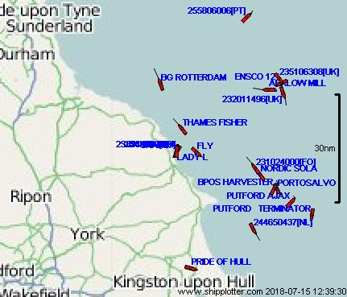

Yorkshire Coast AIS from Scarborough
Brought to you by Neal ArundaleVesselFinder view
| ShipPlotter view (only my data) |
|
AisDecoder - Google
Earth View (only my data)
|
ShipAis view


Data currently being received